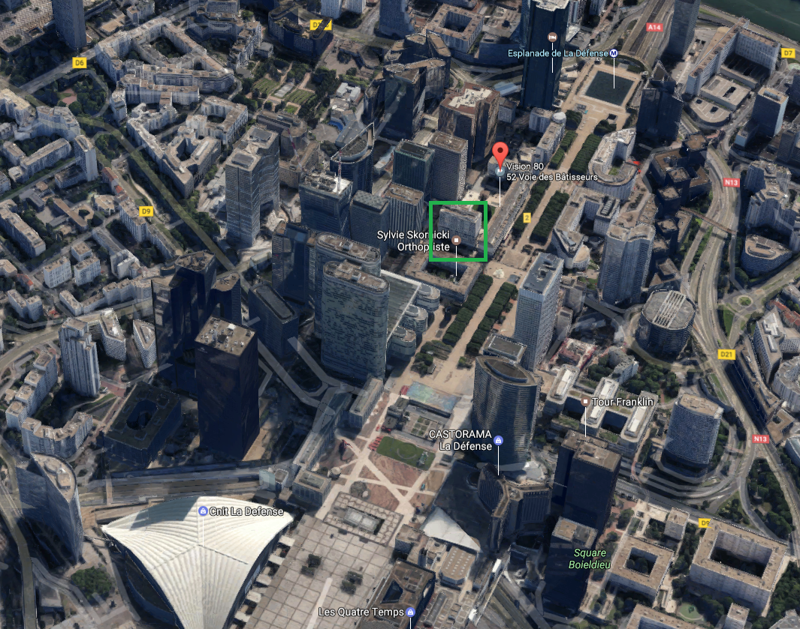
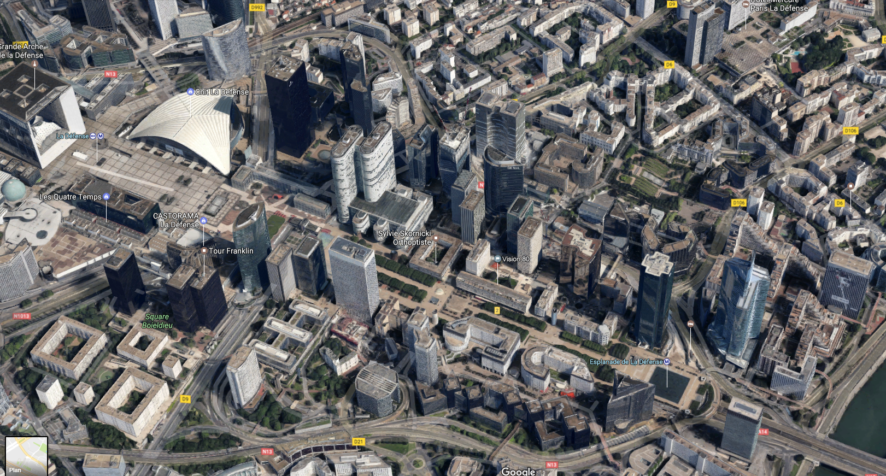
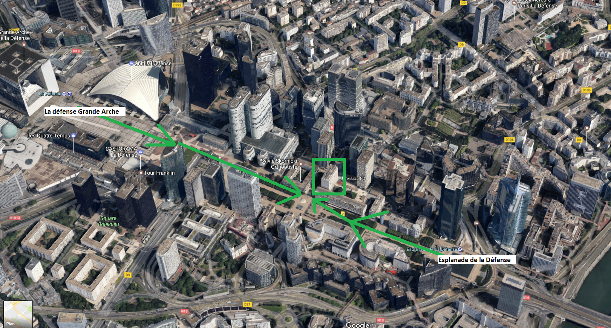
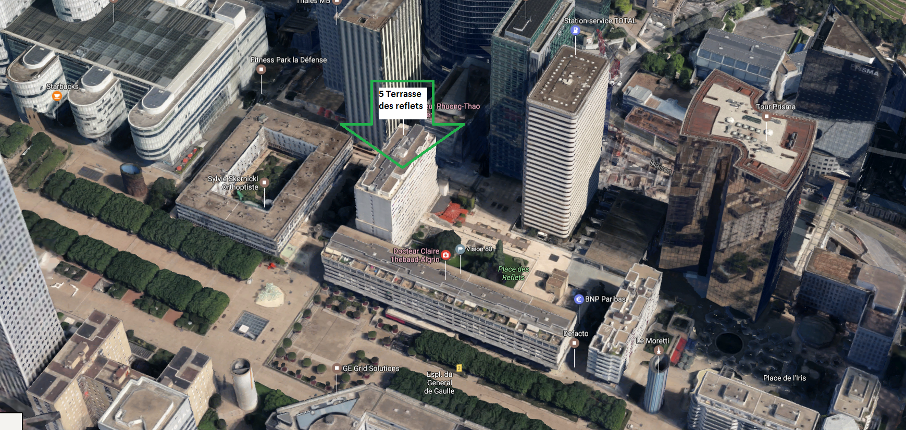
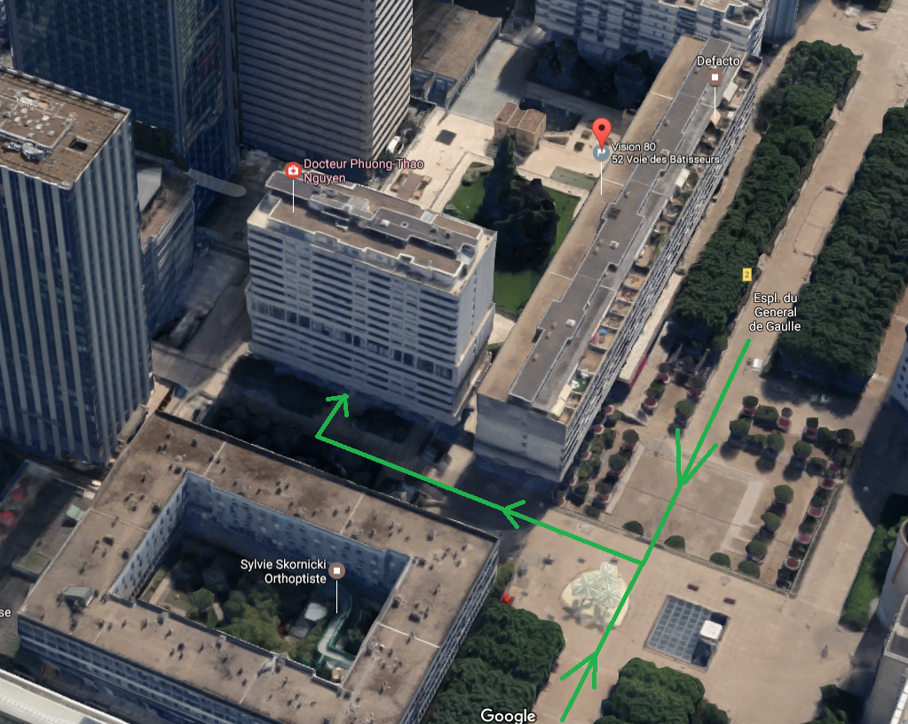

En métro
Stations : Esplanade de la Défense (ligne 1) ou La Défense Grande Arche (RER A, ligne 1, tram T2). Dans les deux cas vous arrivez sur le parvis de la Défense.
-
Depuis le parvis, dirigez-vous vers l'immeuble marqué dans le carré vert.

-
Vous voyez l'immeuble Vision 80.

-
Approchez-vous.

-
Vous arrivez au pied de l'immeuble. Sonnez à l'interphone.

Si vous venez de l'Esplanade de la Défense, continuez encore un peu au-delà. Vous dépasserez l'immeuble à droite, et vous verrez derrière un autre immeuble du même style, plus grand (ce sont les 1 et 3 terrasse des reflets).
